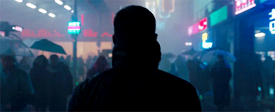

Cuando Blade Runner 2049 se estrenó en 2017, el público y la crítica quedaron impactados por su impresionante estética visual. La película, dirigida por Denis Villeneuve y con efectos visuales a cargo de la galardonada compañía Double Negative (DNEG), llevó la imaginación cibernética del futuro a un nivel inédito en el cine. Pero ¿cómo lograron engañar a nuestros ojos con escenarios hiperrealistas y personajes digitales que parecen tangibles? Acompáñanos a descubrir los secretos detrás de esta obra maestra de la ciencia ficción.
 Filosofía Visual: Un Homenaje a lo Clásico con un Toque Moderno
Denis Villeneuve y el director de fotografía Roger Deakins querían preservar la esencia visual del Blade Runner original de 1982. La clave era capturar la sensación de un mundo retrofuturista, combinando efectos prácticos con tecnología digital de punta. Para ello, se utilizaron efectos especiales físicos, maquetas, sets gigantes y una iluminación meticulosamente planeada, complementada con efectos CGI sutiles para ampliar el universo sin que se sintiera artificial.

Los Hologramas: Tecnología en su Máxima Expresión
Uno de los elementos visuales más innovadores de la película fueron los hologramas, en especial Joi, la inteligencia artificial interpretada por Ana de Armas. Su personaje era un desafío visual porque debía verse como una figura translúcida y etérea, sin perder su humanidad. Los efectos visuales lograron esto combinando distintas capas de renderizado, lo que permitió darle una apariencia tridimensional que respondía a la iluminación del entorno en tiempo real.
Otra escena emblemática con hologramas es la actuación de Elvis Presley y Marilyn Monroe en el club de Las Vegas. La sincronización de los efectos visuales con la ambientación sonora y lumínica hizo que estos hologramas parecieran parte natural del mundo de Blade Runner.
La Influencia del Color y la Iluminación
El uso del color en Blade Runner 2049 es fundamental para la narrativa visual. Los tonos fríos dominan la mayor parte del filme, transmitiendo una sensación de soledad y deshumanización. En contraste, las escenas con Joi o Rachael utilizan colores cálidos, lo que genera una sensación de intimidad y nostalgia. Roger Deakins usó fuentes de luz volumétrica, luces LED y neón para dar a cada escena una estética futurista pero realista.
Conclusión
Blade Runner 2049 es un ejemplo magistral de cómo los efectos visuales pueden integrarse de manera orgánica con la narrativa para crear una experiencia cinematográfica inmersiva. Desde la recreación digital de personajes hasta el uso innovador de miniaturas, hologramas y escenarios digitales, la película representa lo mejor de la ciencia ficción moderna. Su impacto en la industria es innegable y sigue inspirando a futuros cineastas y artistas de VFX a seguir empujando los límites de lo que es posible en la pantalla grande. 🌟🎥